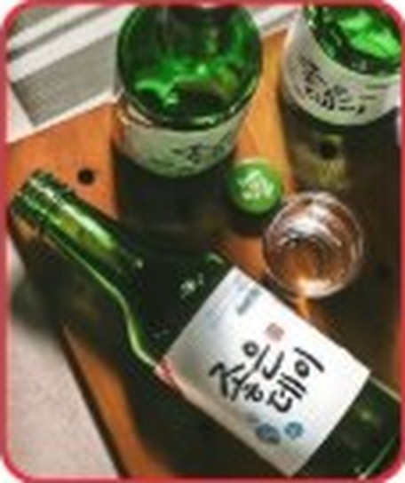
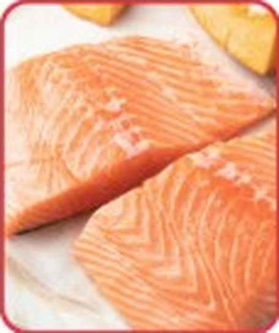

Sushi variado
Seleção do chef com peixes frescos e arroz temperado.
R$ [--]
Culinária japonesa
Cortes frescos, arroz no ponto e pratos feitos com cuidado, do jeito tradicional e com um toque moderno.
Sobre nós
Fundada em 1997, a Nippobraz é uma empresa especializada na venda de peixes, mariscos e produtos japoneses.
Também temos o registro no Ministério da Agricultura (S.I.F.) e implantamos programas de autocontrole e de qualidade.
Tudo isso para oferecer os produtos com a melhor qualidade possível para nossos clientes.
Produtos

Bebida destilada transparente de origem coreana, geralmente consumida pura. O teor alcoólico varia entre 16,8% e 53%.

Trabalhamos com uma variedade enorme de lulas. Textura macia e sabor suave: anéis, lulas inteiras, tubos ou lula defumada.

Carne saborosa e textura suculenta. Versátil e premium, perfeito para grelhar, para sashimi fresco ou para receitas elaboradas.
Carne tenra e sabor único. Escolha entre polvo inteiro eviscerado, tentáculos ou polvo pré-cozido para sashimi.
Pedido
Monte o pedido no cardápio e envie pelo WhatsApp, ou mande uma mensagem para tirar dúvidas.
Unidades e horários
Tv. Apinagés, nº 479
entre Pariquis e Caripunas · Batista Campos
A matriz funciona somente para atacado no momento.
Av. Conselheiro Furtado, nº 593
Batista Campos
Rod. BR 316, km 3, s/nº
Coqueiro